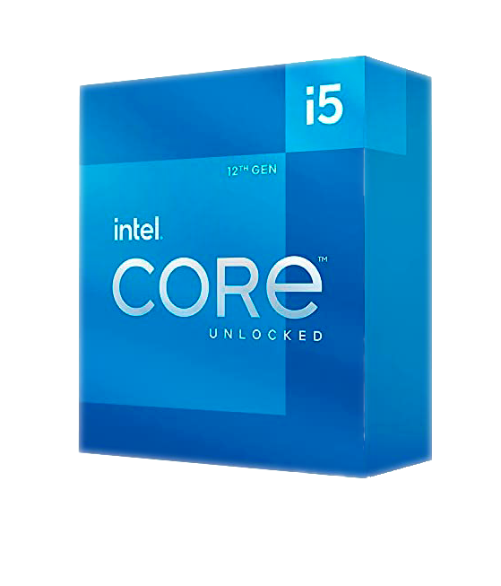
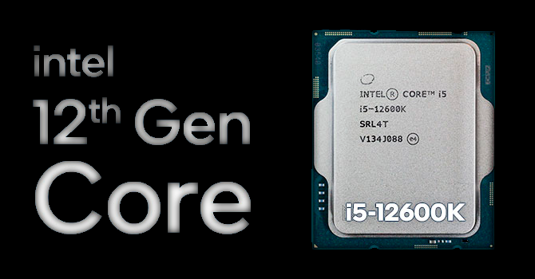
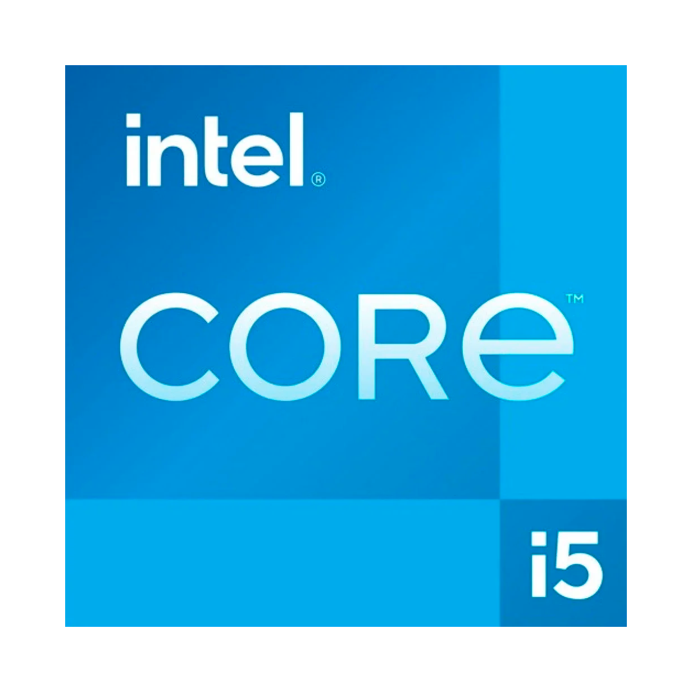

Intel Core i5-12600K
Intel Core i5-12600K – новый процессор на архитектуре Alder Lake-S, использующей 10 нм техпроцесс. У него 10 ядер (6 высокопроизводительных + 4 энергоэффективных) и 16 потоков. Процессор работает на базовой частоте в 3.7 ГГц и до 4.9 ГГц в турбо-режиме, а объем его кэш-памяти равен 20 Мб. При цене в $320 он является прямым конкурентом процессору AMD Ryzen 5 5600X с ценой $310, обладающему 6 ядрами и 12 потоками.


Intel Core i5-12600K
Процессор обладает 20 линиями PCIe, 16 из которых PCI Express 5. Поддерживается как DDR4, так и DDR5, но не одновременно и не с одной и той же материнской платой, поэтому вам придется заранее выбирать какой тип памяти вы хотите использовать. Стандартная поддержка памяти включает в себя DDR4-3200 или DDR5-4800, но по большей части новая высокоскоростная память DDR5 предлагает очень мало дополнительной производительности в паре с процессорами Alder Lake. Это значит, что на данный момент вы можете игнорировать DDR5 и пока оставаться на DDR4.
Intel Core i5-12600K
Благодаря гибридному дизайну ядра Alder Lake, i5-12600K, как и большинство процессоров 12-го поколения лучше работает под управлением Windows 11 и ее улучшенного планировщика потоков. Поэтому все тесты в этой статье были сделаны на компьютере с Windows 11. Для тестирования использовалась материнская плата MSI Z690 Tomahawk Wi-Fi DDR4. В тестовой сборке Ryzen задействована материнская плата ASUS ROG Crosshair VIII Dark Hero с последним обновлением BIOS, и, конечно же, были установлены все последние обновления Windows и драйверы. Все тесты приложений и игр были сделаны с помощью видеокарты AMD Radeon RX 6900 XT.
